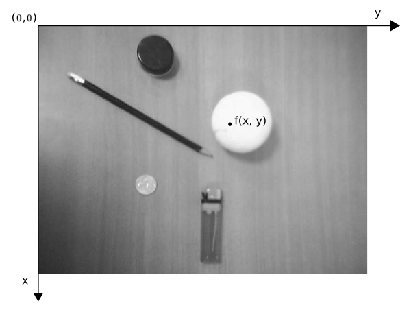
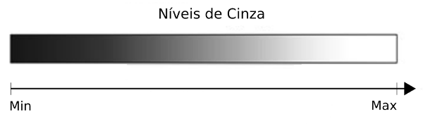
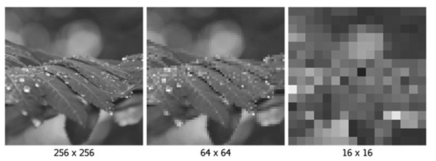

Processamento de Imagens em Ruby
Fundamentos
Imagens Digitais
São definidas por uma função bidimensional de intensidade da luz $f(x, y)$, onde:
- $(x, y)$ denotam as coordenadas espaciais
- o valor de $f$ em qualquer ponto $(x, y)$ é proporcional ao brilho da imagem naquele ponto
Os pontos de uma imagem são denominados pixels.
Convenção dos eixos para representação de imagens digitais

Propriedades:
- Largura: 640px
- Altura: 480px
- Exemplo: $f(366, 188) = 248$
Fatores que afetam a qualidade da imagem
- Quantização
- Resolução espacial
Quantização - número de níveis de cinza
| Precisão | Mínimo | Máximo |
|---|---|---|
| $2^{1}$ | 0 | 1 |
| $2^{2}$ | 0 | 3 |
| $2^{3}$ | 0 | 7 |
| $2^{4}$ | 0 | 15 |
| $2^{5}$ | 0 | 31 |
| $2^{6}$ | 0 | 63 |
| $2^{7}$ | 0 | 127 |
| $2^{8}$ | 0 | 255 |


Resolução Espacial

Processamento de Imagens Digitais
São operações realizadas em imagem digitais.
Áreas de aplicação
- Facilitar a interpretação de imagens por pessoas
- Permitir o armazenamento, transmissão e representação de informação visual para percepção por máquinas